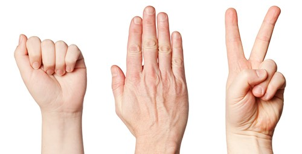

Rock, Paper, and Cut to the Chase!
Here is your opportunity to train an image classifier yourself. If the page has loaded correctly you have a generic trained image classifier downloaded to your browser. Now you can train this classifier to any four things you want. I am suggesting you teach it to play Rock, Paper, Scissors and recognize when you aren't playing.
It's not the traditional game, but you hold up your hand in the web cam as Rock, Paper, or Scissors like you would in a game and then click the appropriate train button. You will start to see predictiontion based on what is happening in the webcam. Probabilty is how certain the guess is from 0 to 1.
RECOMMENDATIONS
- Train a rock, paper, scissors a couple times each BEFORE no action.
- It takes about 30 trys on each before you get consistent results.
- Make sure to mix it up. It learns best when they are out of order.
- Move your hand to different spots in the viewport.
- Change what's in the background to increase results.
SIDE NOTE:
This is a tiny neural network. It lives in your browser right now! As soon as you refresh this page it will forget everything you taugh it.